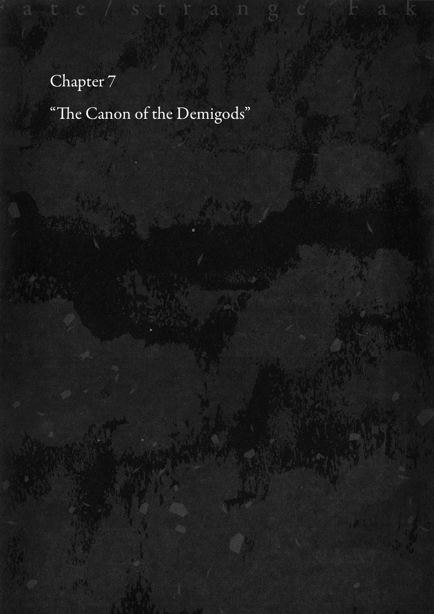
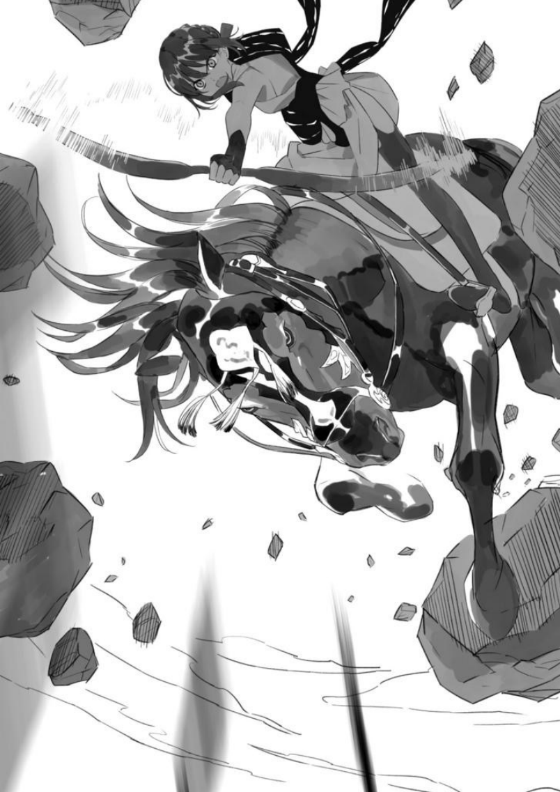
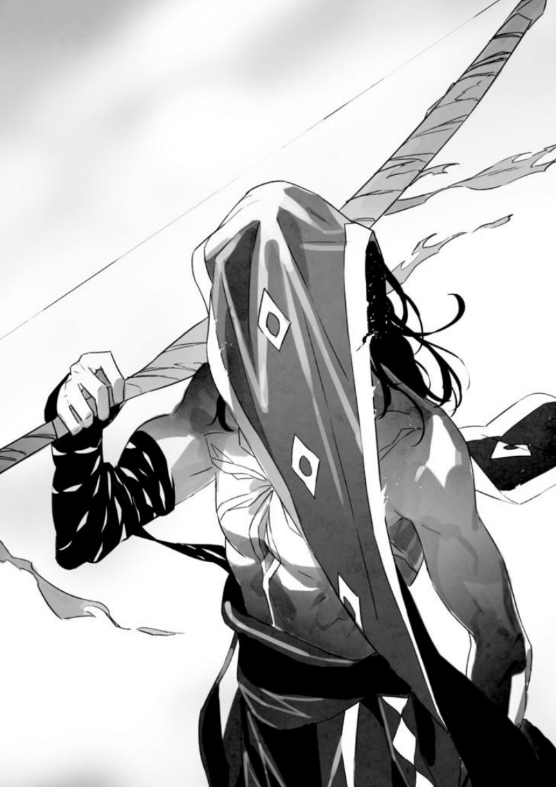

Capítulo 7: Dia 1, Tarde (1)
Num sonho.
"O Sr. Sol está tão quentinho! Você não acha, Sr. Escuro?" Na Snowfield do mundo dos sonhos de Tsubaki, Kuruoka Tsubaki soava inocente enquanto se sentava no gramado de um jardim onde os animais brincavam.
A entidade fantástica chamada "Sr. Escuro" — Pale Rider —, porém, estava encolhida sob a sombra das árvores.
"Oh? Você não gosta do Sr. Sol, Sr. Escuro?" Como se respondesse à pergunta de Tsubaki, Rider estremeceu de repente. "Só um pouquinho", foi a sensação que ela teve de que aquela massa negra queria dizer, a julgar por seu comportamento. Talvez fosse só imaginação dela, mas, ainda assim, Tsubaki chamou Rider.
"Se você não está se sentindo bem, por que não entra?" Rider, também conhecido como "Sr. Escuro", não falava com Tsubaki desde o primeiro encontro. Desde que começou a levar inúmeros animais para dentro do sonho, porém, ele aos poucos passou a se expressar por meio do comportamento, embora só num nível em que dava para dizer se estava de bom ou mau humor, como um animal.
Enquanto Tsubaki se dirigia para dentro de casa, de repente olhou ao redor para o distrito residencial silencioso e murmurou:
"Será que todo mundo foi embora porque não gosta desta cidade...?" A expressão de Tsubaki se anuviou. O "Sr. Escuro", agora mais ou menos do tamanho dela, aproximou-se e esfregou a cabeça nela, quase como se perguntasse: "Tem alguma coisa errada?" Tsubaki sorriu para ele e balançou a cabeça.
"Obrigada. Estou bem, Sr. Escuro." Então, olhando ao redor para os incontáveis animais brincando no jardim, ela continuou: "Quero dizer, agora tem tantos animais aqui. Antes não era assim..." "Agora que ficou desse jeito, mamãe, papai e todo mundo vão continuar nesta cidade, né?"
Rider ouviu aquelas palavras e julgou que elas constituíam o "desejo" dela. No momento, Rider era um realizador de desejos extremamente incompleto, que recebia ordens de sua Mestre, Tsubaki.
Rider começou a se contorcer, pronto para usar seu poder para tornar real a situação que ela desejava. No momento, porém, Rider não era capaz de inferências complexas.
E então...
O mundo real. Os arredores de Snowfield.
A longa estrada cortava a região selvagem, e vários carros seguiam por ela. Em um deles viajavam alguns magos. Eles não eram muito conhecidos, nem mesmo na Torre do Relógio. Ainda assim, estavam entre os grupos que tinham ouvido os rumores e visitado Snowfield com a intenção de fazer nome.
"Acabamos de passar os limites da cidade." As palavras do jovem mago ao volante arrancaram gemidos do mago de meia-idade no banco de trás.
"'A'm! Va'ta da'a ci'ade, logo!" Não dava para entender o que ele dizia, mas dava para perceber que estava apavorado. Ele havia tentado negociar com um Espírito Heroico — aparentemente Assassin — e acabara com uma adaga atravessada na língua. Como magia de cura não era seu forte, continuava a berrar para o motorista, seu aprendiz, com a língua envolta em amuletos.
"Eu entendo, mestre. Nós desistimos no instante em que vimos aquela cratera no deserto, então estamos com o senhor nessa vontade de fugir."
"O carro à nossa frente provavelmente também está cheio de magos. Tem um familiar voando sobre ele e..." Então o motorista notou uma mudança. A partir de mais ou menos o ponto em que haviam deixado os limites da cidade, havia vários carros parados dos dois lados da estrada. O carro que vinha muito à frente deles também encostou às pressas e parou.
O motorista se perguntava o que poderia ter provocado aquilo, ali no meio do nada, quando viu o familiar que voava sobre o carro da frente despencar no chão. Ao mesmo tempo, sentiu uma náusea intensa e ficou difícil continuar dirigindo.
"...!?" Apressado, ele jogou o carro para o acostamento e olhou pelo retrovisor,
pronto para pedir desculpas. "C-com licença, de repente eu senti... Mestre!?" A cena refletida no retrovisor era anormal. O mago de meia-idade, seu professor, havia desabado, com o corpo frouxo e o rosto pálido.
"Isso é ruim. Temos que..." Reprimindo a própria náusea, o motorista se virou para o aprendiz mais velho no banco do passageiro e estremeceu de novo. O rosto do aprendiz mais velho também estava pálido, e ele tinha espasmos. O que pareciam hematomas azulados começavam a surgir no dorso das mãos e no pescoço.
"Qu... Ah... Aaaah!" Então o motorista percebeu. Hematomas semelhantes também estavam subindo por seus próprios braços, infiltrando-se para dentro do corpo. Um grito ecoou no carro. Depois veio o silêncio.
Vários minutos depois, o carro começou a andar devagar. Os outros carros parados ao redor também começaram a se mover assim que seus motores pegaram. Todos, sem exceção, faziam retorno e seguiam de volta para Snowfield.
Dentro do carro que voltava para a cidade, o motorista de olhar vazio anunciou: "Estou louco para voltar para Snowfield!" "Sim, é uma cidade tão boa. Temos que arranjar bons lugares para assistir à Guerra do Santo Graal!", respondeu o aprendiz mais velho no banco do passageiro, com os olhos igualmente vazios.
Os hematomas que tinham surgido em seus corpos quase desapareceram, e a cor do rosto deles voltava ao normal. Suas mentes, porém, haviam se tornado algo completamente diferente.
"Bo... bo'm... va'ta pra ci'ade." Ouvindo os alegres balbucios do mestre, eles conduziram o carro através do ermo. Em direção à cidade de Snowfield, onde o caos da batalha seguia em fúria.
Naquele dia, naquele momento, a cidade de Snowfield se tornou uma prisão indulgente. Uma prisão que não deixava ninguém sair e recusava a entrada a ninguém. Parecia quase como se a cidade tivesse vontade própria e estivesse devorando pessoas.
Norte de Snowfield. O grande desfiladeiro.
O que está acontecendo...? Quem são esses Espíritos Heroicos...? Tiné Chelc pôs o rosto para fora da parte traseira de Vimana, um Fantasma Nobre voador que Gilgamesh tirara de seu tesouro. A cena que acabara de ocorrer estava gravada em seus olhos.
Gilgamesh estava enfrentando o misterioso Archer. Uma Serva misteriosa havia interrompido a batalha entre os dois. Gilgamesh parecera claramente irritado com a interrupção, mas os acontecimentos avançaram antes que a intrusa tivesse a chance de responder.
Naquele instante, o misterioso Archer, que um único golpe da Serva misteriosa havia soterrado sob uma montanha de escombros, lançou aqueles escombros pelos ares como se fosse uma erupção vulcânica.
Inúmeros pedregulhos gigantes foram arremessados tão alto que Tiné teve de erguer o pescoço para vê-los. Então várias das pedras se despedaçaram de repente, e flechas envoltas em vastas quantidades de energia mágica surgiram dentre os fragmentos. O misterioso Archer havia subido junto com os escombros e disparado incontáveis flechas por trás das rochas em ascensão.
A chuva de flechas, cada uma acompanhada de seu próprio tornado, despencou sobre Gilgamesh e a Serva misteriosa, puxando consigo os fragmentos dos pedregulhos despedaçados para dentro dos vácuos rodopiantes.
No instante seguinte, Gilgamesh lançou armas de sua Gate of Babylon, enquanto a misteriosa Serva encaixava várias flechas no arco que surgira em suas mãos e as disparava ao mesmo tempo. As armas e flechas, lançadas em velocidades rápidas demais para os olhos de Tiné acompanharem, iam repelindo um vendaval violento atrás do outro.
Era de se esperar de Sua Majestade... mas quem exatamente é esse Espírito Heroico...? Pelo fato de ela ter surgido montada, o mais provável era que fosse Rider. Pela habilidade com o arco, porém, poderia perfeitamente ser Archer. Mas isso significaria que três Archers diferentes se manifestaram na cidade.
Ou será que ela consegue usar um arco com essa força toda sem ser uma Archer...? Impossível, pensou Tiné. Seria como um arqueiro competir com as outras classes em esgrima. O Rei dos Heróis possuía espadas como Ea e Merodach apesar de ser Archer, mas, deixando de lado o poder aterrador delas, ele jamais tentaria enfrentar a classe Saber de frente numa disputa de pura esgrima. Pelo menos era isso que Tiné pensava na época.
A cena diante de seus olhos, porém, desafiava o senso comum dela. "..." A Serva estendeu a mão direita para o lado, e um cavalo apareceu ali.
Então ela montou de leve e cavalgou com vigor para subir o desfiladeiro.
O pano enrolado em seu braço ainda transbordava divindade concentrada. Ela fez a poderosa energia mágica circular para dentro do cavalo por meio das rédeas. Cavalo e cavaleira, movendo-se como um único organismo, avançaram em disparada por entre a chuva de ventanias. Enormes massas de escombros já começavam a cair de volta ao solo. Ela passou a galopar levemente sobre elas, até que, por fim, cavalgava até mesmo sobre os pedregulhos ainda suspensos no ar.
Ao testemunhar a Serva subir de costas pela cascata de escombros, Tiné teve certeza.
Só pode ser Rider! Isso significaria que um herói naturalmente dotado das qualidades de um arqueiro assumira a forma de Rider nesta Guerra. Talvez fosse razoável supor que a força de seu arco estivesse sendo reforçada pela aura divina que fluía do pano enrolado em seu braço.
Então aquele pano é um Fantasma Nobre... um que fortalece as capacidades de quem o usa... Enquanto observava, a Serva subiu alto aos céus e enfim alcançou o topo da chuva de escombros. Então, fixando o olhar na figura do misterioso Archer abaixo dela, retesou o arco sobre o lombo de sua montaria.

O misterioso Archer percebeu sua presença e voltou o rosto para encará-la através do pano que lhe cobria a cabeça. "..." A cavaleira o encarava com o sol às costas, o arco revestido de divindade concentrada.
"...Entendo." "Archeeer!" Exibindo toda a sua poderosa animosidade, a mulher colocou o próprio ser inteiro naquele grito. "...Então é você, rainha da traição", murmurou o arqueiro. Ele preparou o próprio arco sem sequer se dar ao trabalho de desviar, fez a divindade concentrada brotar do pano ao redor do próprio braço e, em seguida, interceptou com cinco flechas suas as cinco flechas disparadas pela cavaleira. As pontas das flechas colidiram sem desvio sequer de um centímetro. A energia mágica nelas impregnada colidiu, ricocheteou e açoitou os arredores na forma de um grande vendaval.
Enquanto bloqueava com a própria magia o vento e os cascalhos que ele carregava, Tiné aguardava o próximo movimento do arqueiro.
Mas quem se moveu primeiro foi a cavaleira. Ela refinava uma aura divina ainda mais potente do que antes nas costas do arqueiro. Havia saltado de sua montaria no instante em que disparou e, usando-a como isca, passara para trás do inimigo.
"... Insolente", murmurou o arqueiro, começando a se virar. Antes que tivesse a chance, porém, uma flecha atingiu suas costas, exatamente na altura do coração, à velocidade do som.
E, ainda assim, por alguma razão, assim que a ponta da flecha acertou o corpo do homem — acertou o pano estendido sobre sua cabeça — ela se partiu, espalhando-se aos ventos sem perfurar sua carne.
"Eu sabia..." gemeu, diante daquilo, a Rider a quem ele chamara de "rainha". Mais do que surpresa, o gemido parecia indicar a confirmação de uma hipótese.
"...Entendo", murmurou Gilgamesh. Ele havia voltado temporariamente a embarcar em Vimana e observava os acontecimentos do chão.
"Sua Majestade descobriu alguma coisa?" perguntou Tiné, tímida. "Como aquele mero arqueiro conseguiu se defender contra todos os meus Fantasmas Nobres", respondeu o Rei dos Heróis, divertido, "bem como a razão de ter fracassado em se defender de um golpe do mero punho daquela cavaleira."
"Então há uma razão...?" "Uma bobagem. A armadura dele é especial, só isso." "A armadura...?" perguntou Tiné, virando o olhar para o arqueiro, que havia retornado ao solo. Ele não vestia quase nada que pudesse ser chamado de armadura. As únicas coisas cobrindo a parte superior de seu corpo eram o pano estranho e estampado que lhe cobria a cabeça, além de outro pano estampado enrolado em seu braço.
"É muito provavelmente a pele de alguma espécie de besta demoníaca ou divina. Deve ter dado um trabalho considerável moldá-la nessa forma, mas originalmente ela devia ser algo como um Ugallu."
Gilgamesh citou o nome de um monstro babilônico como exemplo, mas isso não bastou para satisfazer Tiné.
"Quer dizer que essa pele repeliu todos os golpes tremendos de Sua Majestade?" ela insistiu. "Número não entra em questão. Bestas divinas ou demoníacas às vezes rejeitam a própria civilização humana dessa forma. Há pouco, eu o ataquei com tudo e mais um pouco — não só com meus armamentos de primeira linha, mas até com Fantasmas Nobres de ordem inferior que normalmente eu nem me daria ao trabalho de disparar. Não acredito que ele tenha repelido tudo apenas com técnica. Se tivesse feito isso com o próprio corpo, ou com alguma forma de energia mágica, porém, isso não explicaria o fato de a pele estar completamente intacta."
Naquele ponto, o Rei dos Heróis estreitou os olhos e apertou com mais força Merodach, a espada da escolha.
"De vez em quando surge uma criatura desse tipo — uma singularidade que rejeita a própria civilização humana. No mínimo, nenhuma ferramenta criada por humanos perfurará essa pele."
Os lábios de Gilgamesh se suavizaram ligeiramente. "O que foi, Sua Majestade?" "Ah, só que, se foi ele mesmo quem esfolou a criatura, então tenho grandes expectativas em relação a ele." Ao ver o sorriso enviesado no rosto do Rei dos Heróis, Tiné percebeu o que aquilo significava. Aquele Espírito Heroico — a própria personificação da força — esperava que o arqueiro diante dele possuísse um poder capaz de rivalizar com o seu. Sem dúvida ele teria condenado como insolente um Espírito Heroico comum que dependesse do poder de um Fantasma Nobre para afastar seus tesouros.
Tiné se viu reafirmada na crença de que o arqueiro sob seu olhar era um inimigo terrível. Afinal, ele bastava para despertar "grandes expectativas" neste grande e orgulhoso rei.
"Mesmo sem a armadura, varrer meus Fantasmas Nobres com o arco foi um feito de habilidade consumada. Era digno de elogio, embora eu jamais fosse tão vulgar."
"Mas o que são esses Fantasmas Nobres enrolados nos braços dos dois...?" "Muito provavelmente algum tipo de legado que um deus impôs aos humanos. Observe; é o mesmo item, mas cada um deles o utiliza de maneira completamente diferente."
"?" Tiné fez como o Rei dos Heróis ordenou, lançando um feitiço de detecção de energia mágica sobre os próprios olhos e encarando a batalha com atenção.
De fato havia uma diferença. A cavaleira fazia circular pelo corpo inteiro a energia mágica de alta densidade — digna do nome de divindade. O arqueiro, porém, aplicava aquilo apenas às armas; jamais aceitava o poder dentro de si.
"Por quê...? Se ele canalizasse essa aura divina para dentro de um corpo com as qualidades do dele, provavelmente esmagaria a oponente."
O Rei dos Heróis resmungou e ponderou as palavras de Tiné. Então uma sombra de alegria entrou em sua expressão, como se tivesse descoberto um brinquedo curioso.
"Eu apenas considero desagradáveis os deuses que conheço... mas parece que esse sujeito odeia tão profundamente os deuses em que acreditava que quer matá-los."
"Ele odeia... os próprios deuses?" "Cômico, não é? Tenho certeza de que foram justamente esses mesmos deuses que criaram aquele corpo robusto dele. Imagine manter tamanho vigor de vontade enquanto odeia a própria existência. O tolo tem potencial."
As palavras de Gilgamesh não chegaram à cavaleira, mas, enquanto disparava flecha após flecha contra o arqueiro, ela gritou:
"Por quê? Por que você não toma para dentro de si o poder do meu pai — o poder do cinturão de guerra? Está me desprezando!? Zombando de mim!?"
"O poder de um deus não é algo para se abrigar dentro do próprio corpo", respondeu solenemente o arqueiro, aparando com o arco em mãos os disparos dela, cada um investido de força suficiente para destruir exércitos.
"...O quê?" Ao ouvir aquilo, a cavaleira enfim percebeu o que fluía profundamente pelo corpo do oponente. Um poder semelhante a veneno queimado, totalmente distinto do de um deus, preenchia o arqueiro. Ele usava esse poder para controlar à força a energia irradiada pelo "cinturão de guerra", como se ela fosse seu familiar.
Preparando o arco, imbuído dos poderes misturados de um deus e de algo mais, o arqueiro proferiu por trás do pano palavras semelhantes a uma maldição, carregadas de raiva e desprezo entrelaçados.
"Ela deve ser forçada a se submeter, pisoteada... e governada pelo poder do homem."
Ao mesmo tempo. A delegacia.
"Relatório, senhor. Confirmadas múltiplas reações que se acredita serem de Espíritos Heroicos no desfiladeiro ao norte. Acredita-se que uma delas seja Archer — Gilgamesh."
Ao receber o relatório secreto, o chefe de polícia soltou um longo suspiro. Em seguida, voltou o olhar para a garota mandante sentada em seu sofá, comendo um bolo que parecia ter produzido do nada.
"...Você vai me explicar isso, Francesca." "Explicar o quê? Tenho quase certeza de que expliquei a invocação dos verdadeiros Espíritos Heroicos antes mesmo de começarmos."
"O que eu quero saber é quem invocou quem." Francesca desviou o olhar do chefe, que a encarava em silêncio com um dedo no queixo. "O quê? Você quer saber disso, numa Guerra do Santo Graal? Não. Eu sei a identidade desse Espírito Heroico e as informações do Mestre dele, então até poderia te contar, mas, por outro lado, não parece que Faldeus ou os chefes dele confiem tanto assim em você. O que será que eu faço?"
"Não se faça de idiota. Entre isso e o incidente de ontem à noite na casa de ópera, é duvidoso que os magos participantes tenham a menor noção de sigilo. Atacar abertamente um hotel-cassino em pleno dia envolve os moradores da cidade. O Apóstolo Morto ainda não deu as caras, mas já recebi relatos de gente ferida por vidro quebrado!"
O tom do chefe ficou um pouco mais áspero à medida que falava. Francesca virou-se para ele com um sorriso sombrio.
"Oh? Eu achei que estávamos preparados para envolver civis no instante em que decidimos usar esta cidade como palco da Guerra do Santo Graal."
"Não de forma tão visível assim. Nós invocamos aquele Caster justamente para vencer com confiabilidade e ainda manter o dano no mínimo. Se algum Mestre estiver disposto a envolver o povo desta cidade sem motivo real, acredito que deva ser eliminado imediatamente."
"Você é mesmo rígido. Bom, não é como se eu estivesse tentando massacrar os moradores da cidade, então vou te dar uma dica", soltou Francesca, rindo. "Você conhece Deus? Não estou falando daquele que as crianças da Igreja Sagrada adoram; estou falando de deuses de outra mitologia."
"...?" "Veja, naquela época em que este planeta ainda transbordava energia mágica — o que chamam de Era dos Deuses —, todo tipo de 'conceito' e 'corpo estranho' se relacionava com os humanos. Eles tinham inteligência, mas, no fim das contas, eram criaturas diferentes."
Enquanto falava, Francesca encarou a distância, estreitando os olhos como se recordasse algo querido. "E, quando isso acontecia, como era de se esperar, rolavam certos mal-entendidos. Disso saíam um monte de comédias e
tragédias. Bom, isso também acontece entre humanos, mas... Enfim, quando seu parceiro é basicamente uma massa de energia, os enganos e mal-entendidos ficam num nível totalmente diferente! Então tanto as risadas quanto a tristeza acabam ampliadas, entende?"
"...O que você está querendo dizer?" "Claro, o ódio também ferve na mesma medida." Então, voltando a atenção para os redemoinhos de energia mágica que sentia vindo da direção do desfiladeiro, ela recordou em êxtase o que tinha visto no entardecer anterior.
"É verdade que a classe dele é Archer, mas a essência dele mudou completamente. Acho que faria sentido dizer que agora ele é meio Avenger."
"...'Avenger'?" O chefe ouvira de Faldeus que os Einzbern haviam invocado um Espírito Heroico dessa classe especial na Terceira Guerra do Santo Graal. Ao que parecia, ele não tinha sido muito forte, para um Espírito Heroico, e fora eliminado rapidamente. Ainda assim, ele se lembrava de Faldeus — que lera os dados deixados por um participante real dentro de seu próprio fantoche — ter lhe dito, com expressão grave:
"Não tenho prova definitiva... mas, se aquele Espírito Heroico tivesse vencido, o próprio mundo poderia ter acabado. Enfim, era um sujeito estranho."
Se havia aparecido uma entidade de natureza semelhante à daquele Espírito Heroico, então isso não a tornava absurdamente perigosa?
O chefe franziu a testa. Francesca deu de ombros e começou a lhe falar sobre o arqueiro — Avenger. Falou com alegria, com deleite, como se prezasse o próprio ressentimento vingativo daquele
Espírito Heroico.
"Embora o ressentimento desse Espírito Heroico não seja contra a humanidade... mas sim contra os deuses antiquíssimos que, a esta altura, já desapareceram, apodreceram ou se esconderam em algum lugar."
O grande desfiladeiro.
O arqueiro e a cavaleira, ambos portadores do mesmo Fantasma Nobre, continuaram lutando, misturando ataques de longa e curta distância. A cavaleira havia produzido uma lança e um arco a partir da energia mágica com forte tonalidade de divindade inerente ao seu corpo. Fazia uso magistral de ambos em conjunto com sua fiel montaria enquanto mantinha a ofensiva contra o arqueiro.
Será que aquele cavalo é um dos Fantasmas Nobres dela? pensou Tiné enquanto observava o combate. Ele exibia movimentos próprios de uma besta fantasmagórica, inconcebíveis num cavalo comum, enquanto a cavaleira tentava empurrar o arqueiro cada vez mais para um canto. Mas então, como se tivesse percebido alguma coisa, o cavalo parou e se empinou nas patas traseiras. No mesmo instante, incontáveis armas se cravaram no chão entre ela e o arqueiro.
"Achei que eu tinha dito para não interferir!" A cavaleira lançou um olhar furioso ao homem que havia disparado aquilo. "Tola", retrucou com desdém esse homem — o Rei dos Heróis. "Não tenho ouvidos para uma mulher tão mal-educada a ponto de não desmontar diante da presença de um rei."
Ele permanecia de pé na proa de Vimana, contemplando-os com calma do alto. O espaço atrás dele brilhava com as pontas dos inúmeros Fantasmas Nobres adormecidos em seu tesouro.
A cavaleira se afastou temporariamente dos dois arqueiros e encarou com desconfiança o homem a bordo de Vimana.
"Um rei? Você?" "Ignorante e insolente. Podem chamá-la de rainha, mas imagino que seja uma das ladras que disputaram pedaços do meu jardim na minha ausência. Repulsivo."
Não havia sarcasmo; suas palavras gélidas vinham carregadas de desprezo inequívoco. "Você não é digna de existir no mesmo lugar que o verdadeiro rei — eu. Desapareça." Com o ar de um homem chutando uma pedrinha para longe da estrada, o Rei dos Heróis lançou um enxame de Fantasmas Nobres a partir de sua Gate of Babylon.
"...!" O instinto deve ter avisado a cavaleira de que não seria prudente receber aquilo de frente. Conduzindo a montaria com perícia, ela serpenteou por entre a chuva de Fantasmas Nobres.
Então o arqueiro coberto de panos disparou uma flecha afiada mirando o cavalo. "!" O animal desviou por um fio, mas perdeu o equilíbrio. A segunda onda vinda da Gate of Babylon já avançava sobre cavalo e cavaleira. Instantaneamente, uma energia mágica ainda mais poderosa brotou da cavaleira. Ela aglutinou a energia mágica em si mesma, densa de divindade, e a pura energia mágica jorrando do pano — que podia ser chamada de divindade em si — e canalizou tudo na lança que segurava. A cavaleira arremessou a lança contra o Rei dos Heróis, tentando repelir por força bruta os incontáveis Fantasmas Nobres que desabavam sobre ela.
A lança, envolta em aura divina, atravessou a segunda chuva de Fantasmas Nobres e voou direto para o coração de Gilgamesh. O Rei dos Heróis, porém, não deu um único passo. Ele desdobrou vários Fantasmas Nobres de escudo a partir de sua Gate of Babylon. A lança que se aproximava
dele perfurou vários deles antes de finalmente parar.
"Já faz um tempo que isso está me incomodando... o que é essa quantidade ridícula de Fantasmas Nobres?"
A cavaleira soava exasperada. Gilgamesh a ignorou e declarou com ar indiferente:
"Vir contra mim usando o poder de um deus, de todas as coisas... Sua insolência não tem limites, mulher."
Então, examinando a cavaleira, ele sorriu. Parecia que seu interesse fora levemente despertado.
"Pode não ter saído ilesa, mas vejo que conseguiu ao menos suportar vários Fantasmas Nobres de alta patente."
A cavaleira perdia uma quantidade nada desprezível de sangue dos ferimentos nos ombros e nos flancos. Vários dos Fantasmas Nobres que ela não conseguira aparar completamente deviam tê-la raspado. Ainda assim, mantinha-se com postura de guerreira sobre a montaria.
Ao ver isso, o Rei dos Heróis assentiu e ponderou. "Parece que o sangue de um deus que desconheço corre espesso em suas veias. Achei que meu prazer tinha sido estragado, mas, com vocês dois como oponentes, isto ao menos servirá de aquecimento para o cumprimento do meu acordo com meu amigo."
O Rei dos Heróis ainda fazia pose de despreocupado, mas não havia descuido nem soberba em seus olhos.
"Vocês são pedras de toque. Não podem cair sem meu consentimento." Para o Rei dos Heróis, um aquecimento sério significava testar tudo o que preparara para a batalha com seu amigo, incluindo artimanhas que jamais empregaria em circunstâncias normais.
"...Se você insiste em continuar me atrapalhando, vou eliminar você primeiro, Rei Dourado." Nesse ponto, o Rei dos Heróis soltou uma risada de escárnio. "Atrapalhando, eu? Tem certeza de que não quis dizer sua salvação, garota que se diz rainha?"
"O quê...?" Gilgamesh lançou um olhar para o arqueiro que se erguia imponente diante de uma montanha de escombros enquanto respondia à Rider desconfiada.
"Se você nem sequer percebe quando está sendo manipulada, como pretende caçar aquele homem?"
"...Está dizendo que ele está brincando comigo?" "Como Espíritos Heroicos, você e ele pertencem a ordens diferentes. Você não pode ser tão vulgar a ponto de não perceber isso."
Até mesmo Tiné, observando os Espíritos Heroicos à sombra de Vimana, foi capaz de compreender as palavras do Rei dos Heróis.
Os Mestres na Guerra do Santo Graal recebiam uma simples habilidade de clarividência que lhes permitia conhecer, de forma geral, forças e fraquezas dos oponentes, divididas em status, força, agilidade e assim por diante. A forma como essa informação aparecia para cada Mestre variava conforme suas sensibilidades. Tiné a visualizava como a diferença de velocidade entre as correntes de seis rios descendo de uma montanha.
Ao que ela podia ver, todos os rios corriam velozes no caso do Rei dos Heróis e do arqueiro coberto de panos. Comparados aos deles, os da cavaleira corriam de forma suave. O rio que governava a sorte, em especial, se destacava por sua lentidão. Mesmo numa simples comparação de habilidades básicas, ela parecia estar em leve desvantagem. Parecia que estava elevando seu poder natural em várias patentes ao abrigar no próprio corpo a aura divina de seu Fantasma Nobre. Contra um oponente que possuía o mesmo Fantasma Nobre, porém, isso não seria o suficiente para lhe dar vantagem. Talvez houvesse alguma diferença entre abrigar o poder de um deus dentro do próprio corpo e usá-lo como ferramenta, mas Tiné não conseguia conjecturar que efeito essa dife rença poderia produzir.
Enquanto Tiné ponderava, a expressão da cavaleira endureceu, e ela lançou um olhar afiado ao arqueiro.
"Eu sei que ele é superior a mim..." Por um breve instante, o tom de sua voz correspondeu à aparência juvenil. No momento seguinte, lançou uma declaração ousada, carregada de pura animosidade.
"Afinal, fui morta por este homem!"
"O quê?" Por um momento, Tiné congelou, sem compreender o comportamento de Rider. Ela sabia o que aquelas palavras queriam dizer, mas não conseguia entender o propósito de gritar algo que dava aos outros uma pista sobre o verdadeiro nome da cavaleira. Ela conhecia o arqueiro e, diante do Rei dos Heróis, provavelmente ocultar o Nome Verdadeiro valia pouco. Ainda assim, era impossível saber onde um familiar poderia estar observando. Ela podia se dar ao luxo de revelar uma pista do próprio Nome Verdadeiro nessas condições?
Talvez a cavaleira fosse mais impulsiva do que Tiné havia imaginado. O pensamento levou a mente de Tiné aos verdadeiros nomes dos Espíritos Heroicos inimigos.
Uma mulher chamada de rainha, habilidosa com cavalos, arco e lança. Um herói que a matou.
Um Fantasma Nobre de pano que ambos possuem. Uma pele de animal que nega a humanidade. Dentro de Tiné, que estudara uma ampla gama de mitos e epopeias em preparação para a Guerra do Santo Graal, várias peças do quebra-cabeça se encaixaram, formando a figura de dois heróis.
Mesmo assim, ela não aceitou essa resposta de imediato. A cavaleira era uma coisa; a impressão que o arqueiro lhe causava, porém, era simplesmente distante demais do herói que ela havia imaginado.
Então, como se quisesse provar isso, a cavaleira gritou: "Mas o meu fim não importa!" Ela fitou o arqueiro e, em seguida, Tiné. !? Tiné enrijeceu sob aquele olhar inesperado. A cavaleira, porém, não fez menção de atacá-la e voltou a fitar o arqueiro.
"Responda! Por que você mirou naquela criança?" A resposta do arqueiro, em contraste, foi desapaixonada. "É natural mirar numa Mestre que se mostra descuidadamente ao lado do próprio Servo. Mesmo sendo criança, ela é uma maga que entrou em batalha com a determinação de esmagar os inimigos. Não tenho motivo para fazer concessões a ela. De todas as pessoas, você, rainha cuja origem é a própria guerra, me pergunta isso?"
"Cale a boca! Fecha essa boca e apaga isso da sua cara! Eu mandei responder, mas não quero ouvir argumentos triviais que parecem saídos da boca de um estranho!" berrou irracionalmente a cavaleira. Materializando de novo a lança, ela a apontou para o arqueiro e continuou o interrogatório.
"Era você quem dobrava todas as regras aceitas do campo de batalha na forma que desejava com sua força e sua astúcia! Foi por isso que eu acreditei que você... que pelo menos você era um homem que jamais faria uma coisa dessas!"
A atenção dela agora estava completamente voltada para o arqueiro. Do ponto de vista de Tiné, aquilo parecia a abertura perfeita. No entanto...
"Meu rei..." "Deixe-os. Observar dois palhaços caluniando um ao outro é uma forma de entretenimento." Apesar do que o Rei dos Heróis dizia, não havia desordem nem desatenção alguma na energia mágica que o envolvia. Tiné podia, no entanto, sentir algo como curiosidade de conhecer melhor a natureza de seus oponentes. O arqueiro, ao menos, devia possuir habilidade considerável para despertar o interesse de seu rei altivo. Era a cavaleira, porém, quem ocupava a mente de Tiné.
Essa Rider está furiosa porque o arqueiro mirou em mim...? Mais do que por ter sido morta ela mesma? ...Por quê? Tiné havia oferecido a própria vida pelo bem de seu povo. Desde o momento em que decidira invocar o Rei dos Heróis e eliminar os magos, já estava preparada para que o jogo virasse contra ela e fosse morta em vez disso. Do ponto de vista dela, o argumento do arqueiro era sensato.
Será que ela nem sequer me enxerga como inimiga...?
Indiferente à confusão da garota, a cavaleira voltou a gritar de cima do cavalo. "Ouvi dizer que você era implacável em batalha; que até saqueava as ruas das cidades inimigas. Tenho certeza de que também recorria a ataques covardes pelas costas se isso servisse aos seus objetivos. Mas nada disso abalaria a fama de um herói se fosse feito em nome de sua ambição."
A garota montada elevou ainda mais a voz, de um modo mais maduro do que sua aparência sugeria. "Mas, quaisquer que fossem as circunstâncias — mesmo diante de uma criança amaldiçoada que traria desastre ao mundo — eu tinha certeza de que você jamais apontaria o arco com alegria para uma criança! Você seria a última pessoa a perdoar isso!"
"..." "Em que ponto você abandonou o nome que era a glória dos deuses, que ecoava em cânticos reverentes e assombrados por toda a nossa terra natal, até os confins da fértil planície do Termodonte:—"
Entregando-se ao ímpeto e à fúria, a cavaleira fez menção de gritar o nome do inimigo, sem se importar em revelar o próprio, quando...
"Silêncio."
Uma única palavra do arqueiro congelou o ar ao redor. Ao mesmo tempo, uma sombra — da mesma cor marrom-avermelhada que manchava o corpo do homem — começou a brotar e se contorcer como um ser vivo. Era ódio; era medo; era escárnio; era arrependimento; era inveja; era pena; era raiva; era resignação; era malícia; era mortificação; era desespero; e, por isso mesmo, era vazio.
Das profundezas daquela sombra, como uma gama de emoções destilada até o limite absoluto, veio uma voz que parecia lançar uma maldição sobre todos os que a ouviam.
Até a ousada cavaleira pareceu intimidada por um instante, e Tiné sentiu que seu próprio coração poderia parar. Só o Rei dos Heróis permaneceu calmo. Seus lábios até se curvaram num leve sorriso, como o de um crítico diante de uma comédia.
"O herói a quem esse nome pertencia já não existe", continuou o arqueiro, ignorando a reação dos três. "Não, 'ele' já não é sequer um herói. Era um tolo que se insinuou a tiranos embriagados de deleite,
e pagou por isso queimando a veste da terra — sua alma humana — em chamas e relâmpagos. Em seu leito de morte, quebrou o próprio juramento e escolheu o prazer em vez da dor!"
"Quem é você? O que você quer...?" perguntou a rainha, o suor frio escorrendo por suas faces. Ela estava convencida de que aquele homem não era o grande herói que conhecera.
"Sou apenas um ser humano. Rejeito os deuses do Olimpo — incluindo seu pai, Ares — e vou pisoteá-los e profaná-los. Sou apenas um vingador, e não vivo para nada além disso.
"Sim, minha carne e meu sangue, minha própria alma, são a sombra de um tolo que caiu tão baixo que se tornou um deus."
A delegacia.
Francesca se contorceu de empolgação ao lembrar do "Espírito Heroico" que Bazdilot havia invocado, e que ela observara através de sua bola de cristal naquela manhã, com a permissão dele.
"Aah! Só de pensar nisso minhas tripas parecem ferver! Aquela sensação de viver apenas para profanar e blasfemar contra os deuses! Eu adoro! Sabe, isso me lembra meu melhor amigo. Aposto que os dois se dariam super bem se eu os colocasse frente a frente. Mas, claro, o rancor deles é voltado para deuses completamente diferentes."
O chefe começou a sair da sala, ignorando Francesca, que tagarelava de forma incompreensível dentro de seu próprio mundo.
"Oh? Aonde você vai?" "Lidar com a situação, obviamente." "Você ficou louco? Parece que ontem você teve um bom embate com aquela garota Assassin, mas tenho quase certeza de que não há nada que você possa fazer contra as crianças lá no desfiladeiro." Francesca fechou as pernas e se dirigiu ao chefe com uma expressão séria. "Se não tomar cuidado, o Rei Douradinho pode matar você no instante em que meter o nariz."
O chefe sabia muito bem que ela estava certa. Mas, como mago que precisava colocar o sigilo da magia acima de tudo, e como chefe de polícia que precisava garantir a segurança de sua cidade, ele não podia ficar sentado sem fazer nada.
"Não posso simplesmente deixá-los à vontade. Nesse ritmo, um golpe perdido pode demolir facilmente um prédio. Também vou procurar Faldeus para pedir ajuda, embora duvide que isso dê em alguma coisa. Mesmo que ele não consiga intervir diretamente na luta, é melhor começar a pensar na contenção do caso o quanto antes."
"Oh, você não precisa ficar tão agitado. Eu já tomei providências." "O quê...?"
Francesca abriu um sorriso obsceno para o chefe desconfiado e pronunciou uma frase que só lhe traria ainda mais dor de cabeça:
"Acontece que o Servo que eu invoquei está indo para lá neste exato momento para interrompê-los!"
"Entendo..." A cavaleira ouviu a voz do arqueiro, repleta de profundo ressentimento e determinação, e a fúria desapareceu de dentro dela.
"Então você já não é mais ele." Ela estreitou os olhos, controlou a respiração e acariciou suavemente o pescoço do cavalo. Num instante, a aura divina que a envolvia se entrelaçou com sua própria energia mágica, aumentando rapidamente de pureza.
"...!? Isso..." Ao sentir a energia mágica pelas linhas ley da terra, Tiné arfou sem querer. O sistema da Guerra do Santo Graal — ao menos se fosse idêntico ao sistema de Fuyuki, que Tiné havia investigado com antecedência — não deveria ser capaz de invocar um Espírito Divino. Até que ponto um Espírito Heroico, uma vez invocado, podia manejar poder divino, porém, era algo que Tiné não sabia.
Se a cavaleira fosse mesmo quem Tiné achava que era, então ela devia ser uma Semideusa, filha de um deus. Faltava-lhe o poder de um Espírito Divino completo, mas o que aconteceria se aquele Fantasma Nobre em forma de pano suprisse a diferença?
O rosto de Tiné empalideceu, mas ela não sentiu medo nem dúvida. Ao seu lado estava um rei a quem ela reverenciava mais do que a qualquer deus.
"Nesse caso, não tentarei reconduzir você ao caminho certo. Vou eliminá-lo como inimigo, junto com o rei dourado."
Ao ouvir aquelas palavras, um sorriso feroz se espalhou pelo rosto do Rei dos Heróis. "Vejo que você sabe latir, garota!" O sorriso dele era a própria arrogância. Não havia mais nele o desdém e o desprezo anteriores. O Rei dos Heróis foi o primeiro a perceber: a presença da cavaleira, que até então correra solta deixando as emoções a dominarem, mudara num instante para a de uma guerreira à altura da aura divina que a revestia.
E, naquele momento, os olhos do Rei dos Heróis, menos orgulhosos, haviam enxergado
uma parte da verdadeira natureza da oponente — aquilo que ela estava prestes a tentar se tornar. Mas, por ser rei, ele se agarrou ao próprio orgulho.
"Que ousadia a sua me colocar, a mim, um rei, ao lado de um mero vingador! Vou agraciar sua barbarida de com uma risada, junto de sua farsa!"
Era verdade que, nesta Guerra do Santo Graal, o Rei dos Heróis não era nem presunçoso nem descuidado. Enquanto fosse um rei, porém, sua disposição arrogante sempre permaneceria como sua postura natural.
O arqueiro, por sua vez, torceu os lábios num sorriso brutal sob a pele monstruosa. "Um bom presságio. Talvez eu não acredite nos tiranos esquecidos, mas quem sabe as estrelas de fato movam nossos destinos."
Enquanto falava, uma energia mágica agourenta se enroscou na flecha encaixada em seu arco. A aura que ela emitia era tamanha que até um mago amador, ou mesmo um humano comum, a notaria.
"A guerra mal começou e eu já tenho a oportunidade de abater um par de Semideuses." A qualidade da flecha não era a única coisa que mudara. Ele abandonara a postura intimidadora de antes em favor de uma mais natural. O arco e a flecha pendiam frouxos ao lado do corpo. À primeira vista, quase parecia que ele havia abandonado de vez a posição de combate.
Apesar da postura, porém, a pressão sinistra que irradiava só continuava a aumentar. Um lutador comum seria assaltado por um terror quase equivalente ao desespero no mesmo instante em que pousasse os olhos nele. Seus oponentes, no entanto, eram uma rainha envolta em poder divino e o rei dos heróis original, coberto de radiância dourada.
Diante de dois governantes que não demonstravam o menor traço de medo, o arqueiro forçou energia negra e lodosa a escorrer de cada centímetro de seu corpo e...
"Certo, já chega disso."
Justo quando os três Espíritos Heroicos pareciam prestes a agir, a voz inocente de um garoto ecoou pela floresta coberta de neve que se estendia até onde a vista alcançava.
"...O quê?" A exclamação confusa de Tiné veio um instante depois da interrupção do garoto. "...!?" "!" "..." A rainha arregalou os olhos em choque, o arqueiro estreitou-os levemente e o Rei
dos Heróis lançou um olhar desconfiado ao cenário ao redor.
Eles deveriam estar em um grande desfiladeiro com vegetação apenas esparsa. No entanto, antes mesmo que as palavras do garoto terminassem de fazer sentido, árvores preenchiam completamente seu campo de visão. Eles se encontravam no meio de uma floresta dominada pelo branco da neve espessa sobre as coníferas, soterran do os tons das agulhas e das cascas.
Neve em pó caiu sobre os braços nus e finos de Tiné, e ela sentiu o frio na pele. Teleporte forçado? Enquanto reunia às pressas uma camada de ar ao redor do corpo para se proteger, Tiné tentou formular uma hipótese sobre o que havia acontecido.
Mas uma magia tão avançada — praticamente Magia Verdadeira — simplesmente não...! Naquele momento, não existia nada perto de Snowfield onde fosse possível ver uma paisagem como aquela. Havia a grande floresta a oeste, mas a variedade de árvores era diferente e, apesar do nome "Snowfield", neve de verdade era rara naquela região.
Também era possível que eles tivessem sido arrastados para outro mundo — um espaço singular chamado "Projeção de Realidade" — por um Servo. Tiné ouvira dizer que havia Espíritos Heroicos que empregavam técnicas desse tipo.
E, ainda assim, o Servo de Tiné, o Rei dos Heróis, não demonstrava sinal particular de alarme. "Não perca a cabeça", disse ele. "Isto não passa de uma ilusão." "Uma ilusão...?" Ilusão era um tipo vasto de magia utilitária de uso geral. Podia ser usada para ocultar um local específico, confundir o senso de direção numa área delimitada, ou mesmo ser lançada sobre si mesmo para auxiliar no treinamento ou reforçar sugestões. A maioria das ilusões comuns, porém, era ineficaz contra alvos que possuíssem Circuitos Mágicos acima de certo nível ou um Brasão Mágico. Como resultado, poucos magos tentavam dominá-la como algo além de uma magia conveniente de uso geral. De fato, Tiné já havia experimentado ter uma ilusão lançada sobre si no passado, mas estava ligada às linhas ley da terra e fortalecia seus sentidos por meio delas, então aquilo não tivera efeito nenhum nela.
Na circunstância presente, porém, ela conseguia sentir o frio até através das linhas ley. ...Pelas conexões de energia mágica, nós certamente ainda estamos num cânion na terra dos meus ancestrais... Então isto realmente é uma ilusão... Mas será que pode mesmo existir uma ilusão poderosa o bastante para enganar não só os sentidos humanos... como a própria terra!?
Quantos magos humanos poderiam alcançar esse nível? Com um meio especial, como Olhos Místicos poderosos, seria outra história, mas, em circunstâncias normais, uma ilusão desse nível seria considerada algo além do alcance dos magos humanos.
...Um novo Servo! Ela não conseguia dizer se aquilo era obra de um Fantasma Nobre ou de magia pura e simples. No
mínimo, porém, era altamente provável que o dono daquela voz de garoto fosse um novo Servo.
"Isso não vai dar. Vocês precisam esfriar a cabeça. O que estão pensando, usando seus trunfos logo no primeiro dia? Claro, ouvi dizer que certas pessoas já jogaram seus trunfos no deserto antes mesmo do espetáculo começar! Ha ha!"
A voz do garoto se espalhava por toda a floresta nevada, mas era impossível identificar de onde vinha. Era quase como se cada floco de neve individualmente servisse de alto-falante para ela.
Gilgamesh agiu como se não tivesse ouvido a voz e falou num tom de leve desagrado: "Então havia mais um arruaceiro sem modos à espreita para estragar minha diversão no último instante. Não sei o que você busca, mas por acaso imaginou que poderia enganar meus olhos com essa ilusão de quinta categoria?"
"Ora, então esse é mesmo Gilgamesh, o Rei dos Heróis! O dono da humanidade inteira, tão famoso como monarca esclarecido quanto como déspota! Parece que eu não consigo jogar lã sobre os olhos penetrantes de Vossa grande, altiva, sábia e pedante Majestade! O que será que eu faço?"
Um tratamento que ultrapassava o exagero e caía no deboche explícito ressoou pela floresta ilusória com uma voz juvenil. Então, no instante seguinte... Uma voz diferente, andrógina, ecoou de trás de Gilgamesh e Tiné.
"Então, que tal os seus ouvidos, Gil?"
Tiné se virou e viu um Espírito Heroico. Um Espírito Heroico com rosto e constituição que podiam ser tomados tanto por masculinos quanto femininos, e aos quais se prendia um indefinível traço de juventude. Um corpo liso e esguio que lembrava o de uma fera aperfeiçoada. Traços tão graciosos e belos que não parecia importar se eram de homem ou de mulher.
Este Servo é... Tiné reconheceu de imediato o que era a entidade que surgira subitamente atrás dela. Ela só havia acompanhado os acontecimentos à distância, por meio de um familiar, mas tinha certeza absoluta de que se tratava do Espírito Heroico que Gilgamesh enfrentara logo após se manifestar; aquele com quem ele criara a cratera no deserto.
Pelo momento e pelas palavras, porém, Tiné também percebeu imediatamente que devia se tratar de uma farsa ilusória.
Nesse caso, como reagiria o Rei dos Heróis? Antes que Tiné conseguisse terminar de se virar para olhar
para ele, Merodach relampejou em sua mão e dispersou o Espírito Heroico ilusório.
"Quem lhe deu permissão para imitar a forma e a voz do meu amigo?" Um tremor ardente atravessou o vínculo entre eles e sacudiu os Circuitos Mágicos de Tiné. Ela conseguiu imaginar que o Rei dos Heróis provavelmente fervia de raiva fria, em vez de se abandonar a uma explosão emocional.
"E por tentar usá-los para me enganar, nem dez mil mortes seriam brandas demais. Farei você se arrepender desse ato impensado usando todos os instrumentos que a humanidade já criou com o puro propósito de infligir dor."
Mais uma vez, a voz do garoto ressoou pela floresta nevada: "Não fique bravo, Majestade. Foi só a travessura de um tolo." Chamando a si mesmo de "tolo", ele implorava perdão ao rei apenas de nome. Ao ouvir isso, porém, Gilgamesh lançou um olhar de cólera mais intenso do que nunca. Seu rugido irado ecoou pela floresta, como se repreendesse o próprio lugar:
"Imbecil! Um tolo é alguém que diverte os outros simplesmente por existir!" Ao que parecia, ele tinha opiniões pessoais muito fortes sobre tolos. Sua postura estava ainda mais altiva do que de costume, e suas palavras ferviam de fúria indisfarçada.
"E, ainda assim, você se chama de tolo e tenta fazer da própria condição uma desculpa grotesca! Você já não é nem de terceira categoria; não pode sequer se chamar de tolo! Você não passa de um imbecil embriagado pelas próprias excentricidades!"
A demonstração de raiva sem precedentes de Gilgamesh fez Tiné suar frio. Até as coisas que o enfureciam eram diferentes da massa comum da humanidade, de modo que ela, como sua vassala, não tinha clareza sobre o que deveria temer no futuro. Por ora, tomou nota mental de que qualquer conversa sobre "tolos" era tabu na presença do rei.
Por outro lado, ela não esperava ter qualquer oportunidade de tocar no assunto por conta própria.
Naquele momento, um ruído esmagador soou à distância, e árvores que deveriam ser produtos de ilusão produziram sons muito reais de estilhaçamento ao serem derrubadas.
A ilusão aparentemente também era visível para a rainha. Ela ergueu o rosto para o céu, com o rosto mascarado de raiva, e gritou:
"Não zombe de mim! Onde você está? Mostre-se, mercador de enganos!" Ela parecera ter se recomposto antes, mas sua fúria mais uma vez voltara a dominá-la. Tiné se perguntava o que a rainha teria visto, quando, de repente, confusão entrou na expressão dela.
"O quê...?" A cavaleira congelou abruptamente e gritou para o ar vazio. "Está dizendo para eu recuar, Mestre? Mas...!"
"!" Ao ouvir aquilo, Tiné entendeu de imediato. O Mestre da cavaleira acabara de instruí-la telepaticamente a recuar.
Enquanto isso, o arqueiro continuava em pé, de rosto calmo, em meio à neve, como se fosse o único ali que não estivesse sendo forçado a ver qualquer ilusão.
A cavaleira virou-se para o arqueiro, lançou-lhe um olhar triste, quase piedoso, e então baixou a cabeça.
"...Entendido, Mestre. Vou obedecer." Ainda montada em seu cavalo, fez a lança desaparecer, voltou-se para o Rei dos Heróis e para o arqueiro e declarou:
"Nos veremos de novo, rei dourado. E você, vingador que engana a si mesmo. Da próxima vez, juro enfrentá-lo como uma guerreira, como exige a etiqueta marcial."
"Você imagina que eu permitiria que uma bandida que cobiça irreverentemente um de meus tesouros deixasse este lugar?"
"Você é um rei, não é? Perseguir um fugitivo com mesquinhez não combina com um rei. Se quer me caçar, desça do seu trono e corra como um guerreiro."
Tiné esperava que o Rei dos Heróis respondesse com indignação. Gilgamesh, porém, apenas sorriu sem temor e não fez menção de se mover.
"Você tem sorte", dirigiu-se ele às costas dela. "Mandar-me descer do meu trono é algo passível de morte... mas eu mesmo já estava esquecendo minha posição como rei ao enfrentá-lo. Não chamarei isso de auto-admoestação, mas concederei a você um perdão em honra ao meu reencontro com meu amigo. Aceite essa honra com gratidão."
Depois de terminar essa declaração rebuscada, Gilgamesh voltou-se para o outro Archer.
"Claro, não posso garantir que ele fechará os olhos para você." Como se respondesse, a voz do garoto ecoou pela neve: "Ora? Sua Majestade vai embora? Bem, eu também estou numa pequena enrascada, então vamos recuar por ora, Archer Verdadeiro. Ou você prefere 'Avenger'?"
Gilgamesh então lançou um olhar fulminante para a própria floresta. "Sua sentença continua a mesma, verme vil. Você está abaixo até dos vira-latas", declarou ele, mal-humorado.
Depois de declarar a voz do garoto um "verme", o Rei dos Heróis voltou-se para o arqueiro e pronunciou um decreto régio.
"Já não faz sentido ocultar seu Nome Verdadeiro, vira-lata. Na verdade, se seu objetivo é profanar metade de si mesmo, não seria dar seu nome um passo a mais nessa direção?"
Arrogante até o fim, Gilgamesh deu ao arqueiro uma ordem real:
"Você tem minha permissão régia. Diga seu próprio Nome Verdadeiro."
O arqueiro abriu um sorriso torto diante daquela ordem absurda. Então apoiou o arco no ombro e, sob o couro que o recobria, abriu lentamente a boca para falar.
"Meu nome é Alkeides."

Ao ouvir esse nome, a cavaleira balançou a cabeça em silêncio. Tiné não compreendeu de imediato a importância do nome. Pouco depois, porém, pescou um fragmento de memória de sua mente.
"O filho de Anfitrião e Alcmena, em cujas veias corre o sangue da realeza micênica."
Ela se lembrou de que esse era o nome de infância de um grande herói — o nome que recebera como humano.
"Rei dourado, o maior dos reis, a quem os reis que conheço nem sequer podem aspirar igualar, nos veremos de novo. Da próxima vez, pisotearei sob meus pés o poder divino que dorme nas profundezas do seu ser."
Mal terminara de falar quando a energia mágica lodosa que escorria dele o envolveu por completo. Ela abriu um buraco vazio no chão nevado da floresta. No instante seguinte, até o lodo desapareceu, e o arqueiro se foi tão completamente como se nunca tivesse existido.
"Então, até outra hora, Vossas Majestades. Se algum dia bater a vontade de depravação, me chamem, tá? Afinal, minhas origens estão na loucura e na insensatez! Ahahahahahaha! Aahaha hahahahahaha!"
A voz ainda tinha a qualidade inocente de um garoto, mas sua risada ecoava de forma insana pela floresta.
Mal a voz se apagou, o campo nevado desapareceu como uma miragem, e o desfiladeiro original voltou a se espalhar diante de Tiné e dos Espíritos Heroicos.
A cavaleira, que havia permanecido o tempo todo, observou Tiné e, por alguma razão, deixou passar um leve sorriso. Então, segurando as rédeas do cavalo, declarou o próprio nome:
"Agora que ele revelou o Nome Verdadeiro, imagino que não faça mais sentido ocultar o meu de vocês." Balançando a cabeça, exasperada, a rainha elevou a voz:
"Eu sou Hipólita, filha de Ares, o deus da guerra, e de Otrera, sacerdotisa de Ártemis. Sou a chefe guerreira das orgulhosas Amazonas! Rei dourado e jovem vassala, nos veremos outra vez!"
Assim que terminou de se apresentar, disparou cavalgando em seu cavalo. Então a cavaleira — Hipólita — se transformou em pontos de luz junto com sua montaria e desapareceu por completo.
Tiné havia passado por um momento breve, mas chocante. Enquanto usava magia para acalmar a própria mente, dirigiu-se ao próprio Servo, o Rei dos Heróis:
"Com todo o respeito, Sua Majestade... tudo bem mesmo não ter revelado o próprio nome?" "..." Diante disso, o Rei dos Heróis ergueu levemente as sobrancelhas. Então balançou a cabeça, como se afastasse algum pensamento, e olhou para cima com um sorriso totalmente destemido.
"Heh... Eles não são dignos de ouvir meu nome. Se voltarem a se pôr diante de mim, eu lhes concederei essa honra."
Tiné assentiu, compreendendo. Ela jamais duvidava das palavras do rei. Ainda assim, uma coisa lhe ocorreu.
"O que aquela voz que soava como a de um garotinho quis dizer com 'uma enrascada'?" "Humph." À pergunta de Tiné, o Rei dos Heróis apagou a expressão do rosto e passou a olhar na direção da cidade, visível a partir do desfiladeiro.
"Provavelmente quis dizer a bandida que arruinou meu reencontro com meu amigo." "?" "Pensei em dissipar a maldição da morte com um único golpe de um dos meus pertences, mas jamais imaginei que ela ocultaria os rastros de uma forma como essa."
"A maldição da... morte?" Tiné franziu o cenho. "Tola", declarou Gilgamesh com seu habitual sorriso destemido. "Não é descortês ostentar um ar de preocupação na presença régia?
"Você está sob minha proteção régia. Se tem tempo para temer maldições, use-o para se maravilhar comigo."
Ao mesmo tempo. Centro Correcional Especial Colesman.
Na sala de monitoramento, as inúmeras cenas projetadas nos modernos monitores por meio de familiares e dispositivos místicos de vigilância criavam uma atmosfera distorcida.
O dono daquela sala, Faldeus, franziu a testa enquanto observava os dados se acumulando. Pelo visto, como eu imaginava, será necessário eliminar Bazdilot em breve. Não; os verdadeiros problemas provavelmente são os financiadores dele, a Família Scladio. Independentemente do resultado da Guerra do Santo Graal, vamos perder o controle das rédeas mais cedo ou mais tarde neste ritmo. Se isso acontecer, perderemos qualquer meio de detê-los, mesmo com ajuda de outros departamentos — não, nem com todo o poder da
Casa Branca.
Faldeus trazia internamente uma expressão azeda, mas não deixava isso transparecer no rosto. E esse não era seu único problema. Os detalhes dos movimentos dos Kuruoka ainda lhe escapavam e, enquanto o Servo que eles haviam invocado continuasse uma incógnita, ele não podia se dar ao luxo de dar um passo em falso.
Se o Espírito Heroico que o lobo prateado invocou — muito provavelmente a boneca de argila babilônica — for Lancer, então os Kuruoka devem ter invocado Rider ou Berserker.
O Espírito Heroico invocado pelo lobo prateado — Enkidu — parecia ser Lancer. Jester Karture e seu grupo — agora cadáveres — pareciam ter invocado a mulher Assassin. O chefe de polícia havia invocado Caster, Alexandre Dumas père. E Tiné Chelc comandava Archer, Gilgamesh, o Rei dos Heróis. Flat Escardos parece ter tido algum tipo de comunicação com um Espírito Heroico no parque... A possibilidade de aquilo ser Berserker é pequena. Nesse caso, o Espírito Heroico invocado pelos Kuruoka é muito provavelmente Berserker.
Ele sabia que os Kuruoka tentavam invocar Shi Huangdi, mas não via sentido em invocar como Berserker um Espírito Heroico que certamente devia se destacar em táticas e estratagemas. Se Shi Huangdi tivesse se manifestado como Berserker por algum erro, era possível que os Kuruoka estivessem sob o jugo do Servo enlouquecido. Tudo isso, porém, não passava de especulação de Faldeus.
Ele havia considerado enviar o próprio Servo, o verdadeiro Assassin, para investigar. No improvável caso de o Servo dos Kuruoka ser o inimigo natural de seu Assassin, porém, acabaria perdendo um peão valioso bem debaixo do nariz.
É um problema atrás do outro. Cashura, que havia invocado Saber, fora morto pelo falso Assassin. Doris Lusendra, que havia invocado o verdadeiro Rider, se recusava a cooperar com Faldeus ou até mesmo a manter contato com ele. Haruri, que estava escalada para invocar o verdadeiro Berserker, estava incomunicável. E de Sigma, que deveria, segundo a ordem, ter invocado Lancer, ele recebera apenas a breve mensagem: "Definitivamente invoquei alguma coisa, mas não tenho ideia do que seja. Voltarei a relatar quando descobrir seu Nome Verdadeiro."
Nosso objetivo não é usar o Santo Graal para realizar um desejo. É ir além disso... avançar a análise da própria Terceira Magia.
O que aconteceria se você obtivesse o Graal e desejasse obter a Terceira Magia? perguntou-se de repente Faldeus. Julgou, porém, que nada de bom sairia de uma especulação tão infantil e decidiu abandoná-la.
Não precisamos insistir nos resultados das batalhas individuais... mas o nosso lado precisa vencer. Tiné Chelc não busca o Graal, mas o que aconteceria se o obtivesse e desejasse a destruição do próprio Sistema do Santo Graal de Snowfield? Tais preocupações fizeram soar alarmes no cérebro de Faldeus.
No pior cenário possível, podemos usar um agente duplo para eliminar Tiné... mas teríamos de visar uma oportunidade em que o Rei dos Heróis estivesse travando combate com outro Servo.
Antes disso, porém... precisamos confirmar os movimentos de Saber. Deveríamos ter câmeras em todos os pontos relevantes da cidade, mas nenhuma delas mostra aquela mulher de óculos. Eu tinha certeza de que ela faria contato com o homúnculo Einzbern, mas...
Eles haviam mantido vigilância sobre a "mulher branca" — o homúnculo Einzbern. Ela desaparecera temporariamente na noite anterior, mas no momento estava novamente presa à rede de vigilância deles. Estranhamente, porém, desde aquela manhã ela estava indo e vindo de shoppings, cassinos e lugares do tipo. Faldeus não conseguia ver consistência alguma em seu comportamento.
Talvez seja uma armadilha para nos despistar? Imagino que ela tenha percebido que está sendo observada. Aquilo estava completamente fora de seu controle. Um problema após o outro surgia, e isso estava lhe dando dor de cabeça. Ele não conseguiu deixar de pressionar a mão nos cantos dos olhos.
"Chefe Dioland." Uma mulher, subordinada de Faldeus Dioland, chamou-o. "O que foi, Aludra?" "É sobre os magos da cidade que falharam em se tornar Mestres... Estamos observando alguns movimentos estranhos."
"?" Faldeus olhou o relatório que ela lhe entregou e depois para alguns dos incontáveis monitores. "...Estranho mesmo." Uma porcentagem significativa dos magos havia deixado a cidade antes do meio-dia. Muitos deles devem ter fugido quando viram a cratera no deserto. Muitos magos também haviam sido feridos pelas mãos do falso Assassin — aquele fanático consumado. Nas circunstâncias atuais, era natural que magos medíocres percebessem que a situação estava além deles e fugissem.
A parte estranha foi o que aconteceu depois. Todos os magos que tinham fugido da cidade naquela manhã deram meia-volta com seus carros e motos e retornaram para Snowfield.
"...Será que alguma outra família os contratou assim que deixaram a cidade?" Seu primeiro pensamento foi uma intervenção da Torre do Relógio. Considerou possível que eles tivessem observado os magos partindo e prometido algum tipo de compensação em troca de se tornarem peões da Torre do Relógio. Essa hipótese, porém, foi refutada pelas palavras seguintes de Aludra.
"Não são só magos, senhor." "...O quê?" "Todos os civis comuns que deixaram a cidade por trabalho e afins depois de certo horário também estão voltando."
Um arrepio desconfortável percorreu Faldeus. "..." Ele sentiu com força a insuficiência de sua própria percepção. Algo estava acontecendo naquela cidade; algo em escala maior do que magia comum. Ele sabia que estava acontecendo, mas não sabia por quê.
Uma barreira para esvaziar a área de pessoas? Não... Como eles estão retornando para a cidade, suponho que teria de ser uma barreira para atrair pessoas para dentro... Mas com que propósito? Ouvi dizer que, na Quinta Guerra do Santo Graal de Fuyuki, houve um Espírito Heroico que tentou reunir Od de civis, mas...
A Quinta Guerra do Santo Graal tinha muitas caixas-pretas. Ele não sabia que destino aquele Espírito Heroico tivera. Tinha, porém, recebido a informação de que realmente haviam ocorrido desmaios em massa na época e que a Igreja Sagrada os acobertara como vazamentos de gás. Ao que parece, espalharam-se entre estudantes do ensino médio da região rumores de que um armamento químico não detonado, lançado pelo exército americano, havia vazado gás, e os colegas de Faldeus conduziram uma operação subsequente para suprimir esse tipo de boato... ou pelo menos era isso que ele se lembrava de ter ouvido.
Uma arma química não detonada... Eu queria que desse para explicar isso assim. Considerando nossa capacidade operacional, já estamos de mãos cheias só com o incidente da cratera.
Snowfield tem oitenta mil habitantes... Fizemos preparativos para lidar com a situação até mesmo se todos eles desaparecessem... Mas, se possível, eu gostaria de evitar algo tão problemático.
Foi o que Faldeus pensou, até perceber que tinha algo apertado na mão. Era um pedaço de papel amassado, coberto de escrita fragmentária. Quando o desdobrou com cuidado, viu que se tratava de uma mensagem claramente endereçada a ele.
Você não percebe? As barreiras desta instalação são espessas.
Portanto, ele não entra aqui.
"..." Nesta Guerra do Santo Graal, Faldeus estava vinculado ao verdadeiro Assassin, Hassan-i Sabbah. Hassan, porém, raramente iniciava conversa. Em primeiro lugar, ele parecia avesso a realmente falar, de modo que, quando se comunicava, costumava fazê-lo por métodos como este. Além disso,
a escrita sempre parecia como se o próprio Faldeus a tivesse rabiscado. Quase parecia projetada para convencer qualquer um que a visse de que o Espírito Heroico Assassin era apenas um delírio de Faldeus.
"E 'ele' é...?" murmurou Faldeus para si mesmo. Como se respondessem, artefatos de compressão começaram a correr pela tela de um dos computadores que enviavam e recebiam dados. Uma fileira de caracteres surgiu, abrindo caminho pelos intervalos, e se gravou no cérebro de Faldeus. Era uma linha curta, composta apenas da resposta à sua pergunta:
O vento pestilento amaldiçoado.
Duas horas depois. Um motel barato.
"Ah, finalmente podemos sair!" Flat Escardos abriu as cortinas da janela e espichou os braços bem para o alto, deixando o sol que entrava banhá-lo.
"Eu não esperava mesmo que ele fosse ficar tão bravo comigo..." O grande alongamento de Flat durou só um instante; então seus ombros tombaram e ele soltou um suspiro. "E eu ainda não acredito que o catalisador que invocou você, Jack, não era algo que o Professor tinha preparado para mim; foi tudo eu tirando conclusões precipitadas..."
Uma voz cavalheiresca emanou do relógio de aparência steampunk em seu pulso esquerdo. "Isso não chega nem perto de como eu me sinto sabendo que fui invocado com um prêmio de videogame. Além disso, você não devia estar feliz por ter escapado só com um sermão de duas horas?"
Berserker — Jack the Ripper — havia assumido a forma de um relógio de pulso. Flat respondeu às consolações dele com um leve abanar de cabeça.
"Duas horas inteiras." Flat desabou na cama, agarrando o celular recém-comprado, e se encolheu com ar abatido.
Menos de quinze segundos depois de Flat mandar por e-mail o número do telefone para seu professor, Lord El-Melloi II, ele havia recebido uma ligação internacional vinda da Inglaterra. O sermão de cerca de duas horas e a reunião de diretrizes de pouco menos de trinta minutos tinham acabado de terminar.
Flat mal atendera o telefone quando uma voz furiosa rugira do outro lado e disparara um longo sermão que até Jack — na forma de relógio de pulso — conseguia ouvir. Aquilo começara com Flat fugindo por conta própria para a América e se estendera a uma série de perguntas sobre assuntos variados, até que...
"Onde diabos você aprendeu o feitiço de invocação? Eu me recuso a acreditar que tenha procurado
isso sozinho nos materiais da Grande Biblioteca. Foi com a Tōsaka?" havia perguntado o professor.
"Ah, é mesmo. Eu devia ter perguntado para a Rin... Na verdade, quando cheguei aqui, fiz isso e aquilo, e meio que acabei invocando ele sem círculo nem encantamento", respondera Flat honestamente, ponto em que, após vários minutos de silêncio, a bronca recomeçara ainda mais feroz do que antes.
O cansaço mental de Flat parecia severo, mas Jack mesmo assim lhe atirou mais palavras duras de propósito.
"Aguente firme. Ouvi tudo e, pelo que pude ver, foi conciso, fácil de entender e, ainda assim, tão sólido que não dava margem a contestação. O problema está em você por fornecer material suficiente para esticar um sermão tão eficientemente conduzido até esse ponto. Console-se pelo fato de ter perdido apenas duas horas."
"Não é isso, Jack." "Me chame de Berserker. E então, o que é?" No lugar de uma cabeça, Jack inclinou de modo interrogativo o longo ponteiro dos minutos. "Enquanto está na Torre do Relógio, o Professor é perseguido por tantas responsabilidades que realmente não pode se dar ao luxo de desperdiçar nem um minuto", explicou Flat, agora com uma expressão mais calma. "Mas, por minha causa, ele desperdiçou duas horas inteiras. Isso me faz sentir que eu realmente fiz alguma coisa errada..."
"Entendo... Você é mais atencioso com o seu professor do que eu pensava." "Só existem três ou quatro pessoas entre os aprendizes do Professor que não respeitam ele!"
"Então até que são vários, não...? Ainda assim, só de ouvi-lo falar ao telefone, deu para perceber que ele deve ser um professor exemplar de magia. Levando em conta que você diz que ele sobreviveu a uma Guerra do Santo Graal no passado, também deve ser um mago de primeira classe."
Jack apenas expressou suas impressões honestas. O rosto de Flat se iluminou. "Claro! Não é só a Guerra do Santo Graal; o Professor resolve todo tipo de caso na Torre do Relógio também! Teve 'The Divided Castle Adra: The Moonlit Crest Contest Serial Killings', e 'Dangerous Beauty: Vanishing at the Towers of the Twin Faces', e 'The Super Express: Judgment Eye' e, hum..."
"Entendo. Tenho certeza de que você continua causando um belo estrago no estômago do seu professor ao nomear arbitrariamente os casos dele e contá-los com enfeites suficientes para uma máquina a vapor."
"Ah, eu não acrescento nada! O Professor é mesmo lendário na Torre do Relógio! Ah, já sei! Quer tentar falar mais um pouquinho com ele pelo telefone? Ele está ocupado, como eu acabei de dizer, então acho que teria de ser rapidinho, mas..."
Jack considerou a sugestão de Flat por alguns instantes e então balançou com força o ponteiro dos minutos
como se fosse a cabeça.
"Obrigado, mas não. Falei com ele apenas por um momento mais cedo, mas ele pareceu enxergar através de mim... Sim... havia nele um ar quase como se fosse me rearranjar em outra coisa."
"Oh... Bom, todo mundo que fala com o Professor diz isso, mas não é como se ele tivesse más intenções..."
"Sim, eu entendo que não é intencional. Tenho certeza de que é apenas um hábito dele. Ainda assim, sua capacidade de enxergar a verdadeira natureza de uma pessoa é vagamente aterradora. Fico receoso de que, se continuasse falando com ele, eu pudesse acabar satisfeito com a própria existência só por isso e seguir em frente sem jamais realizar meu desejo."
"Entendo..." Flat soou desapontado ao se sentar na cama. "Mas eu aprendi que dá para confiar nele", continuou Jack. "Um mago mais parecido com certos magos que conheço teria me agradado e usado todo tipo de truque para me convencer a abandonar a Guerra do Santo Graal e me atrair para a Torre do Relógio. Minha própria existência é um material de pesquisa valioso, afinal. O fato de ele não ter feito isso só pode significar que ou é bondoso demais para ser um mago, ou é uma pessoa capaz de olhar para o quadro geral em vez de perdas e ganhos imediatos."
Na verdade, tinham conversado pouquíssimo, mas Jack sentia certo grau de confiança em — e uma espécie de simpatia por — aquele homem chamado Lord El-Melloi II. Esta última, no fim, reduzia-se à sensação de que Flat devia dar ao professor um trabalho terrível também.
Sem perceber que sua própria falta de freios havia produzido uma sensação de solidariedade entre seu professor e seu Servo ao telefone, Flat escancarou as cortinas e observou a luz intensa do lado de fora.
"Isso mesmo! O Professor é uma pessoa incrível! Ele enxerga muito mais longe do que eu, e..."
Flat ficou parado olhando pela janela. "O que foi?" perguntou o relógio de pulso. "É melhor não mostrar tanto o rosto. Acho que seu professor acabou de mandar você 'ficar quieto e se manter discreto'."
"Ah, mandou sim, mas eu estava pensando... A névoa está bem densa..." "Que névoa?" Jack também olhou pela janela, talvez intrigado por uma palavra que tinha alguma ligação com ele mesmo, mas tudo o que viu foi uma vista clara, iluminada por um sol brilhante.
"Do que você está falando? Não tem névoa nenhuma lá fora." Jack se perguntou se Flat sofria de alguma doença nos olhos. O sorriso sumiu do rosto de Flat quando ele respondeu:
"Não... Não é isso que eu quero dizer... É uma névoa de energia mágica... Quero dizer, desde que cheguei aqui já tinha um pouco disso,
então achei que talvez fosse influência do Graal, mas..."
"?" A fala de Flat saiu entrecortada. Ele observou a paisagem do lado de fora por algum tempo, então falou em tom grave.
"Berserker, isso pode ser bem ruim." "O que foi?" "Talvez estejamos cercados por alguma coisa... extremamente perigosa..." "Um Espírito Heroico inimigo está atacando? Montaram uma barreira ao redor do motel!?" Jack não entendia muito bem o que Flat queria dizer com "névoa", mas entendia, sim, que, embora Flat fosse naturalmente avoado, não era do tipo que brincava com uma coisa dessas. Quando ouviu a resposta de Flat, porém, Jack desejou que fosse brincadeira.
"Oh, não só o motel... No mínimo, isso cobre a cidade inteira."